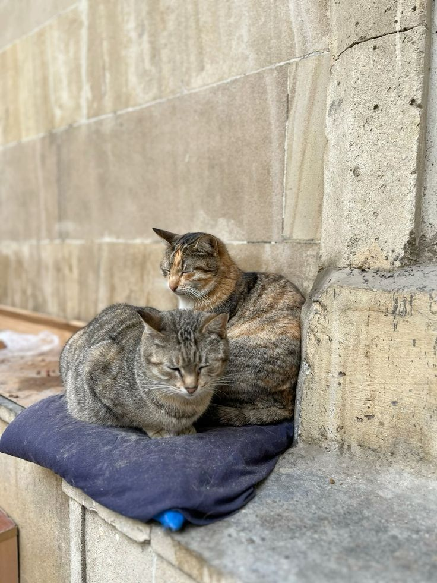
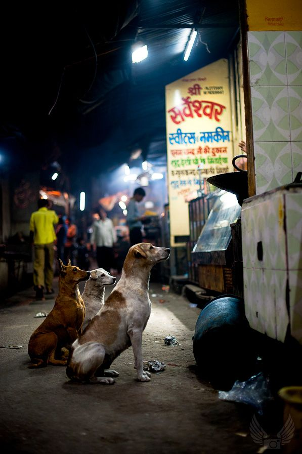

Street dogs are the lovable wanderers of our neighborhoods, each with a unique personality and a heart full of hope. Despite their challenging lives on the streets, they exude an infectious joy that can brighten anyone's day. With their wagging tails and playful antics, these furry companions are always ready to shower you with love and loyalty. Adopting a street dog not only transforms their life but also fills your home with warmth and joy. These dogs have an incredible capacity for affection, and their gratitude will be evident in every wag and cuddle.
Street cats are the independent spirits that grace our lives with their curious nature and playful charm. Often seen lounging in sunny spots or exploring their surroundings, these feline friends have a unique way of captivating our hearts. Despite facing hardships, many street cats possess a gentle disposition and a longing for companionship. By adopting a street cat, you not only give them a safe haven but also gain a delightful companion who may surprise you with their quirky personality and affectionate purrs. They bring comfort and joy, turning any house into a home.
.jpeg)
When we consider adopting, both street dogs and cats deserve our love and attention. These furry friends, each with their own stories and struggles, have an incredible ability to bring happiness into our lives. Whether it’s a dog wagging its tail excitedly or a cat curling up in your lap, their unique quirks and affectionate nature create bonds that are truly special. By opening our hearts and homes to both dogs and cats in need, we not only provide them with a second chance but also enrich our own lives with unconditional love and companionship. Together, they remind us of the beauty of kindness and the joy of sharing our lives with animals who long for a place to belong.